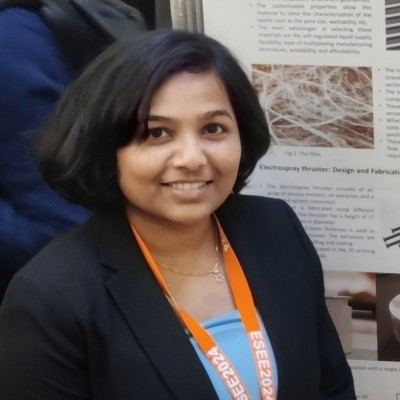

Electric propulsion, chemical rocket engines, and everything in between.

CSPL welcomes enquiries from prospective research students, industry partners and fellow academics working across electric and chemical propulsion.